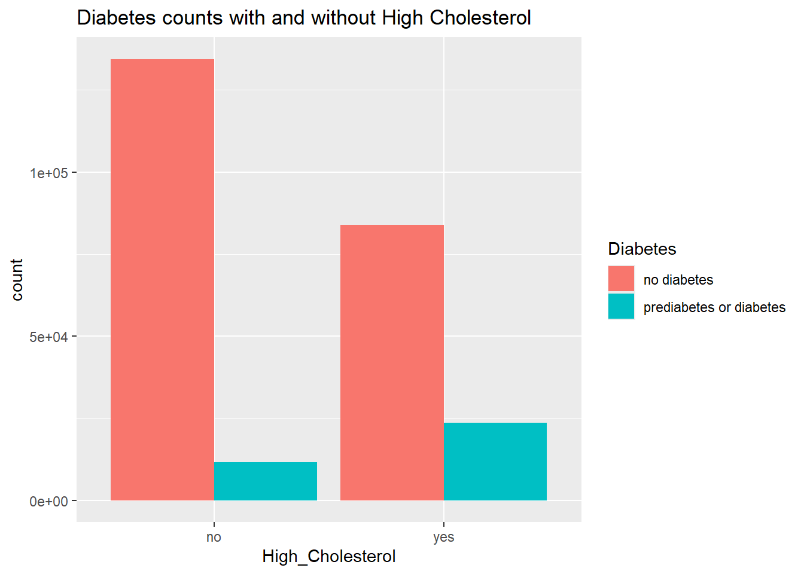
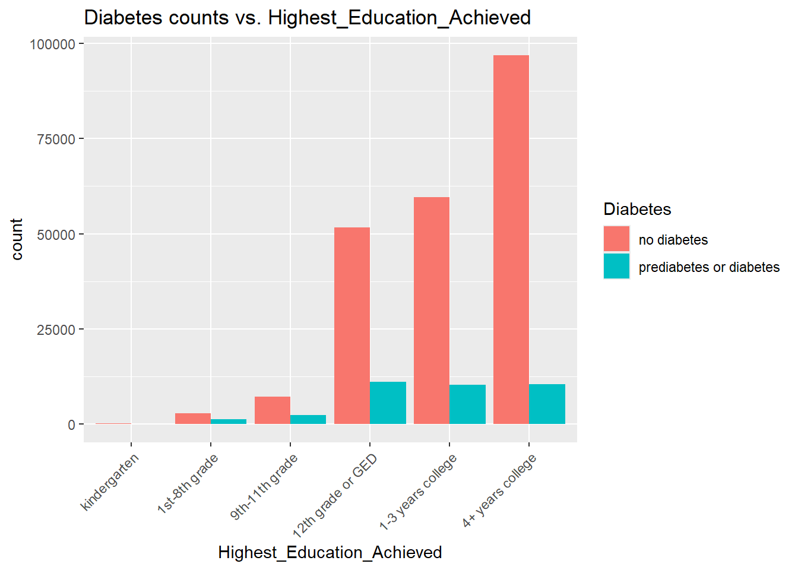
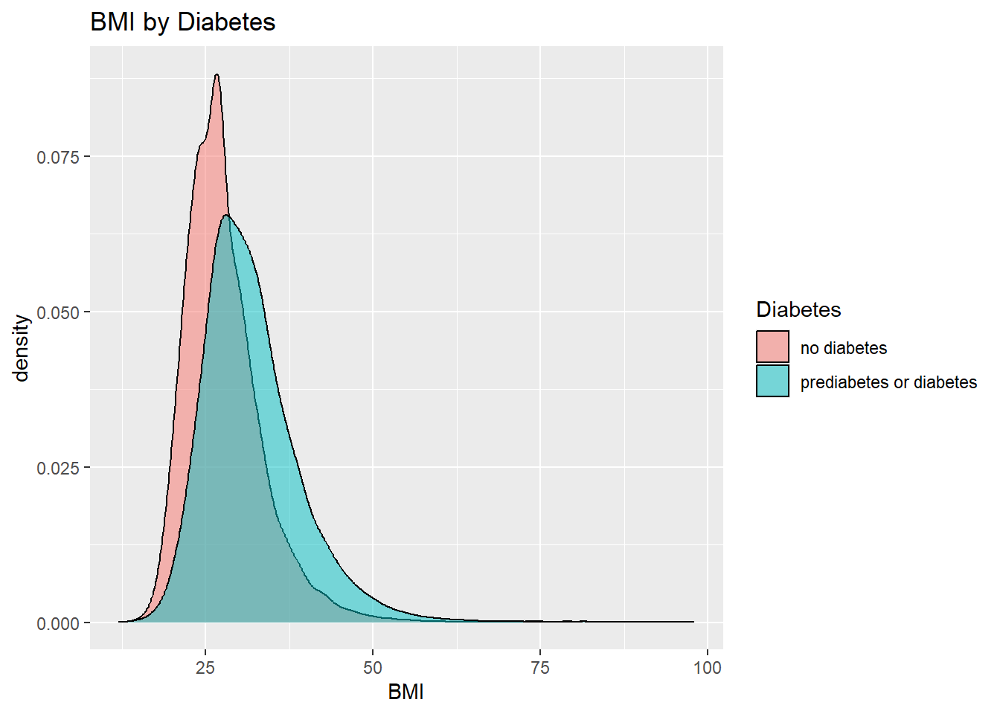

# import libraries
library(readr)
library(tidyr)
library(dplyr)
library(tidyverse)EDA
Our Dataset
In this Exploratory Data Analysis, we will explore the Diabetes Health Indicators Dataset from kaggle. As our goal is to model this dataset and predict the Diabetes variable, we are looking for correlations between other variables and the Diabetes variable. The other variables in this dataset and their expected values are:
Diabetes:
- no diabetes
- prediabetes or diabetes
High_BP: yes/no
(subject has high blood pressure)
High_Cholesterol: yes/no
Checked_Cholesterol_5years: yes/no
BMI: numeric, ranging from 12 to 98
Smoker: yes/no
Stroke: yes/no
Heart_Disease_or_Attack: yes/no
Physical_Activity_30days: yes/no
Daily_Fruit: yes/no
Daily_Vegetable: yes/no
Heavy_Alcohol_Consumption: yes/no
Has_Healthcare: yes/no
(subject has some kind of healthcare coverage)
No_Doctor_bc_Cost: yes/no
(subject has needed to see a doctor within the last year but couldn’t due to cost)
General_Health:
- poor
- fair
- good
- very good
- excellent
Bad_Mental_Days_of_Past_30: numeric, ranging from 0 to 30
Bad_Physical_Days_of_Past_30: numeric, ranging from 0 to 30
Difficulty_Walking: yes/no
Sex: male/female
Age:
- 18-24
- 25-29
- 30-34
- 35-39
- 40-44
- 45-49
- 50-54
- 55-59
- 60-64
- 65-69
- 70-74
- 75-79
- 80 or older
Highest_Education_Achieved:
- kindergarten
- 1st-8th grade
- 9th-11th grade
- 12th grade or GED
- 1-3 years college
- 4+ years college
Income:
- less than $10,000
- less than $15,000
- less than $20,000
- less than $25,000
- less than $35,000
- less than $50,000
- less than $75,000
- more than $75,000
The raw data in this dataset will need to be cleaned up a bit before it looks like the description above! This will be part of our Data Processing step below. We will also use the Data Summaries section below to explore the relationship between each variable and the target variable in order to narrow down which variables we will use for our modeling step, which we will discuss next.
Purpose
This EDA will be used to discover how to preprocess our dataset for modeling, and to narrow down which variables we use in our model. The purpose of the model, which we will build in the Modeling page, is to learn the structure of the data in order to predict the response variable (Diabetes) from the values of the rest of the variables in the dataset. This means that given a new observation, without seeing the Diabetes variable, we will be able to predict its value.
Importing the Data + Initial Data Processing
How is the data stored?
# read in the data
df <- readr::read_csv("diabetes_binary_health_indicators_BRFSS2015.csv")Rows: 253680 Columns: 22
── Column specification ────────────────────────────────────────────────────────
Delimiter: ","
dbl (22): Diabetes_binary, HighBP, HighChol, CholCheck, BMI, Smoker, Stroke,...
ℹ Use `spec()` to retrieve the full column specification for this data.
ℹ Specify the column types or set `show_col_types = FALSE` to quiet this message.head(df)# A tibble: 6 × 22
Diabetes_binary HighBP HighChol CholCheck BMI Smoker Stroke
<dbl> <dbl> <dbl> <dbl> <dbl> <dbl> <dbl>
1 0 1 1 1 40 1 0
2 0 0 0 0 25 1 0
3 0 1 1 1 28 0 0
4 0 1 0 1 27 0 0
5 0 1 1 1 24 0 0
6 0 1 1 1 25 1 0
# ℹ 15 more variables: HeartDiseaseorAttack <dbl>, PhysActivity <dbl>,
# Fruits <dbl>, Veggies <dbl>, HvyAlcoholConsump <dbl>, AnyHealthcare <dbl>,
# NoDocbcCost <dbl>, GenHlth <dbl>, MentHlth <dbl>, PhysHlth <dbl>,
# DiffWalk <dbl>, Sex <dbl>, Age <dbl>, Education <dbl>, Income <dbl>A lot of the columns could have better names, and many of them contain data that should be stored as factors instead of doubles. Let’s update the column names and how the data is stored.
# rename columns and update datatypes/data storage
df <- df |>
rename(Diabetes=Diabetes_binary) |>
mutate(Diabetes=case_when(
Diabetes==0 ~ "no diabetes",
Diabetes==1 ~ "prediabetes or diabetes")) |>
mutate(Diabetes=as.factor(Diabetes)) |>
rename(High_BP=HighBP) |>
mutate(High_BP=case_when(
High_BP==0 ~ "no",
High_BP==1 ~ "yes")) |>
mutate(High_BP=as.factor(High_BP)) |>
rename(High_Cholesterol=HighChol) |>
mutate(High_Cholesterol=case_when(
High_Cholesterol==0 ~ "no",
High_Cholesterol==1 ~ "yes")) |>
mutate(High_Cholesterol=as.factor(High_Cholesterol)) |>
rename(Checked_Cholesterol_5years=CholCheck) |>
mutate(Checked_Cholesterol_5years=case_when(
Checked_Cholesterol_5years==0 ~ "no",
Checked_Cholesterol_5years==1 ~ "yes")) |>
mutate(Checked_Cholesterol_5years=as.factor(Checked_Cholesterol_5years)) |>
mutate(Smoker=case_when(
Smoker==0 ~ "no",
Smoker==1 ~ "yes")) |>
mutate(Smoker=as.factor(Smoker)) |>
mutate(Stroke=case_when(
Stroke==0 ~ "no",
Stroke==1 ~ "yes")) |>
mutate(Stroke=as.factor(Stroke)) |>
rename(Heart_Disease_or_Attack=HeartDiseaseorAttack) |>
mutate(Heart_Disease_or_Attack=case_when(
Heart_Disease_or_Attack==0 ~ "no",
Heart_Disease_or_Attack==1 ~ "yes")) |>
mutate(Heart_Disease_or_Attack=as.factor(Heart_Disease_or_Attack)) |>
rename(Physical_Activity_30days=PhysActivity) |>
mutate(Physical_Activity_30days=case_when(
Physical_Activity_30days==0 ~ "no",
Physical_Activity_30days==1 ~ "yes")) |>
mutate(Physical_Activity_30days=as.factor(Physical_Activity_30days)) |>
rename(Daily_Fruit=Fruits) |>
mutate(Daily_Fruit=case_when(
Daily_Fruit==0 ~ "no",
Daily_Fruit==1 ~ "yes")) |>
mutate(Daily_Fruit=as.factor(Daily_Fruit)) |>
rename(Daily_Vegetable=Veggies) |>
mutate(Daily_Vegetable=case_when(
Daily_Vegetable==0 ~ "no",
Daily_Vegetable==1 ~ "yes")) |>
mutate(Daily_Vegetable=as.factor(Daily_Vegetable)) |>
rename(Heavy_Alcohol_Consumption=HvyAlcoholConsump) |>
mutate(Heavy_Alcohol_Consumption=case_when(
Heavy_Alcohol_Consumption==0 ~ "no",
Heavy_Alcohol_Consumption==1 ~ "yes")) |>
mutate(Heavy_Alcohol_Consumption=as.factor(Heavy_Alcohol_Consumption)) |>
rename(Has_Healthcare=AnyHealthcare) |>
mutate(Has_Healthcare=case_when(
Has_Healthcare==0 ~ "no",
Has_Healthcare==1 ~ "yes")) |>
mutate(Has_Healthcare=as.factor(Has_Healthcare)) |>
rename(No_Doctor_bc_Cost=NoDocbcCost) |>
mutate(No_Doctor_bc_Cost=case_when(
No_Doctor_bc_Cost==0 ~ "no",
No_Doctor_bc_Cost==1 ~ "yes")) |>
mutate(No_Doctor_bc_Cost=as.factor(No_Doctor_bc_Cost)) |>
rename(General_Health=GenHlth) |>
mutate(General_Health=case_when(
General_Health==1 ~ "excellent",
General_Health==2 ~ "very good",
General_Health==3 ~ "good",
General_Health==4 ~ "fair",
General_Health==5 ~ "poor")) |>
mutate(General_Health=as.factor(General_Health)) |>
rename(Bad_Mental_Days_of_Past_30=MentHlth) |>
rename(Bad_Physical_Days_of_Past_30=PhysHlth) |>
rename(Difficulty_Walking=DiffWalk) |>
mutate(Difficulty_Walking=case_when(
Difficulty_Walking==0 ~ "no",
Difficulty_Walking==1 ~ "yes")) |>
mutate(Difficulty_Walking=as.factor(Difficulty_Walking)) |>
mutate(Sex=case_when(
Sex==0 ~ "female",
Sex==1 ~ "male")) |>
mutate(Sex=as.factor(Sex)) |>
mutate(Age=case_when(
Age==1 ~ "18-24",
Age==2 ~ "25-29",
Age==3 ~ "30-34",
Age==4 ~ "35-39",
Age==5 ~ "40-44",
Age==6 ~ "45-49",
Age==7 ~ "50-54",
Age==8 ~ "55-59",
Age==9 ~ "60-64",
Age==10 ~ "65-69",
Age==11 ~ "70-74",
Age==12 ~ "75-79",
Age==13 ~ "80 or older")) |>
mutate(Age=as.factor(Age)) |>
rename(Highest_Education_Achieved=Education) |>
mutate(Highest_Education_Achieved=case_when(
Highest_Education_Achieved==1 ~ "kindergarten",
Highest_Education_Achieved==2 ~ "1st-8th grade",
Highest_Education_Achieved==3 ~ "9th-11th grade",
Highest_Education_Achieved==4 ~ "12th grade or GED",
Highest_Education_Achieved==5 ~ "1-3 years college",
Highest_Education_Achieved==6 ~ "4+ years college")) |>
mutate(Highest_Education_Achieved=as.factor(Highest_Education_Achieved)) |>
mutate(Income=case_when(
Income==1 ~ "less than $10,000",
Income==2 ~ "less than $15,000",
Income==3 ~ "less than $20,000",
Income==4 ~ "less than $25,000",
Income==5 ~ "less than $35,000",
Income==6 ~ "less than $50,000",
Income==7 ~ "less than $75,000",
Income==8 ~ "more than $75,000")) |>
mutate(Income=as.factor(Income))
head(df)# A tibble: 6 × 22
Diabetes High_BP High_Cholesterol Checked_Cholesterol_…¹ BMI Smoker Stroke
<fct> <fct> <fct> <fct> <dbl> <fct> <fct>
1 no diabet… yes yes yes 40 yes no
2 no diabet… no no no 25 yes no
3 no diabet… yes yes yes 28 no no
4 no diabet… yes no yes 27 no no
5 no diabet… yes yes yes 24 no no
6 no diabet… yes yes yes 25 yes no
# ℹ abbreviated name: ¹Checked_Cholesterol_5years
# ℹ 15 more variables: Heart_Disease_or_Attack <fct>,
# Physical_Activity_30days <fct>, Daily_Fruit <fct>, Daily_Vegetable <fct>,
# Heavy_Alcohol_Consumption <fct>, Has_Healthcare <fct>,
# No_Doctor_bc_Cost <fct>, General_Health <fct>,
# Bad_Mental_Days_of_Past_30 <dbl>, Bad_Physical_Days_of_Past_30 <dbl>,
# Difficulty_Walking <fct>, Sex <fct>, Age <fct>, …Now our numeric variables consist of:
- BMI
- Bad_Mental_Days_of_Past_30
- Bad_Physical_Days_of_Past_30
and the rest of the columns contain factor/categorical variables, including our response variable, which is Diabetes.
Now let’s explore what values exist in the data and if any cleaning needs to be done.
# check for missing values
sum_na <- function(column){
sum(is.na(column))
}
na_counts <- df |>
summarize(across(everything(), sum_na))
na_counts# A tibble: 1 × 22
Diabetes High_BP High_Cholesterol Checked_Cholesterol_5y…¹ BMI Smoker Stroke
<int> <int> <int> <int> <int> <int> <int>
1 0 0 0 0 0 0 0
# ℹ abbreviated name: ¹Checked_Cholesterol_5years
# ℹ 15 more variables: Heart_Disease_or_Attack <int>,
# Physical_Activity_30days <int>, Daily_Fruit <int>, Daily_Vegetable <int>,
# Heavy_Alcohol_Consumption <int>, Has_Healthcare <int>,
# No_Doctor_bc_Cost <int>, General_Health <int>,
# Bad_Mental_Days_of_Past_30 <int>, Bad_Physical_Days_of_Past_30 <int>,
# Difficulty_Walking <int>, Sex <int>, Age <int>, …There are no missing values! What values do we see in each categorical column, and how does each value relate to the response variable?
Data Summaries
# Contingency tables!
table(df$Diabetes, High_BP=df$High_BP) High_BP
no yes
no diabetes 136109 82225
prediabetes or diabetes 8742 26604table(df$Diabetes, High_Cholesterol=df$High_Cholesterol) High_Cholesterol
no yes
no diabetes 134429 83905
prediabetes or diabetes 11660 23686table(df$Diabetes, Checked_Cholesterol_5years=df$Checked_Cholesterol_5years) Checked_Cholesterol_5years
no yes
no diabetes 9229 209105
prediabetes or diabetes 241 35105table(df$Diabetes, Smoker=df$Smoker) Smoker
no yes
no diabetes 124228 94106
prediabetes or diabetes 17029 18317table(df$Diabetes, Stroke=df$Stroke) Stroke
no yes
no diabetes 211310 7024
prediabetes or diabetes 32078 3268table(df$Diabetes, Heart_Disease_or_Attack=df$Heart_Disease_or_Attack) Heart_Disease_or_Attack
no yes
no diabetes 202319 16015
prediabetes or diabetes 27468 7878table(df$Diabetes, Physical_Activity_30days=df$Physical_Activity_30days) Physical_Activity_30days
no yes
no diabetes 48701 169633
prediabetes or diabetes 13059 22287table(df$Diabetes, Daily_Fruit=df$Daily_Fruit) Daily_Fruit
no yes
no diabetes 78129 140205
prediabetes or diabetes 14653 20693table(df$Diabetes, Daily_Vegetable=df$Daily_Vegetable) Daily_Vegetable
no yes
no diabetes 39229 179105
prediabetes or diabetes 8610 26736table(df$Diabetes, Heavy_Alcohol_Consumption=df$Heavy_Alcohol_Consumption) Heavy_Alcohol_Consumption
no yes
no diabetes 204910 13424
prediabetes or diabetes 34514 832table(df$Diabetes, Has_Healthcare=df$Has_Healthcare) Has_Healthcare
no yes
no diabetes 10995 207339
prediabetes or diabetes 1422 33924table(df$Diabetes, No_Doctor_bc_Cost=df$No_Doctor_bc_Cost) No_Doctor_bc_Cost
no yes
no diabetes 200722 17612
prediabetes or diabetes 31604 3742table(df$Diabetes, General_Health=df$General_Health) General_Health
excellent fair good poor very good
no diabetes 44159 21780 62189 7503 82703
prediabetes or diabetes 1140 9790 13457 4578 6381table(df$Diabetes, Difficulty_Walking=df$Difficulty_Walking) Difficulty_Walking
no yes
no diabetes 188780 29554
prediabetes or diabetes 22225 13121table(df$Diabetes, Age=df$Age) Age
18-24 25-29 30-34 35-39 40-44 45-49 50-54 55-59 60-64
no diabetes 5622 7458 10809 13197 15106 18077 23226 26569 27511
prediabetes or diabetes 78 140 314 626 1051 1742 3088 4263 5733
Age
65-69 70-74 75-79 80 or older
no diabetes 25636 18392 12577 14154
prediabetes or diabetes 6558 5141 3403 3209table(df$Diabetes, Highest_Education_Achieved=df$Highest_Education_Achieved) Highest_Education_Achieved
1-3 years college 12th grade or GED 1st-8th grade
no diabetes 59556 51684 2860
prediabetes or diabetes 10354 11066 1183
Highest_Education_Achieved
4+ years college 9th-11th grade kindergarten
no diabetes 96925 7182 127
prediabetes or diabetes 10400 2296 47table(df$Diabetes, Income=df$Income) Income
less than $10,000 less than $15,000 less than $20,000
no diabetes 7428 8697 12426
prediabetes or diabetes 2383 3086 3568
Income
less than $25,000 less than $35,000 less than $50,000
no diabetes 16081 21379 31179
prediabetes or diabetes 4054 4504 5291
Income
less than $75,000 more than $75,000
no diabetes 37954 83190
prediabetes or diabetes 5265 7195Let’s look at each of the categorical variable frequencies again, but this time with plots:
# side-by-side bar plots
ggplot(data = df |>
group_by(Diabetes, High_BP) |>
summarize(count = n()), aes(x = High_BP, y = count, fill = Diabetes)) +
ggtitle("Diabetes counts with and without High Blood Pressure") +
geom_bar(position = "dodge", stat = "identity")`summarise()` has grouped output by 'Diabetes'. You can override using the
`.groups` argument.
ggplot(data = df |>
group_by(Diabetes, High_Cholesterol) |>
summarize(count = n()), aes(x = High_Cholesterol, y = count, fill = Diabetes)) +
ggtitle("Diabetes counts with and without High Cholesterol") +
geom_bar(position = "dodge", stat = "identity")`summarise()` has grouped output by 'Diabetes'. You can override using the
`.groups` argument.
ggplot(data = df |>
group_by(Diabetes, Checked_Cholesterol_5years) |>
summarize(count = n()), aes(x = Checked_Cholesterol_5years, y = count, fill = Diabetes)) +
ggtitle("Diabetes counts vs. Checked_Cholesterol_5years") +
geom_bar(position = "dodge", stat = "identity")`summarise()` has grouped output by 'Diabetes'. You can override using the
`.groups` argument.ggplot(data = df |>
group_by(Diabetes, Smoker) |>
summarize(count = n()), aes(x = Smoker, y = count, fill = Diabetes)) +
ggtitle("Diabetes counts vs. Smoker") +
geom_bar(position = "dodge", stat = "identity")`summarise()` has grouped output by 'Diabetes'. You can override using the
`.groups` argument.
ggplot(data = df |>
group_by(Diabetes, Stroke) |>
summarize(count = n()), aes(x = Stroke, y = count, fill = Diabetes)) +
ggtitle("Diabetes counts vs. Stroke") +
geom_bar(position = "dodge", stat = "identity")`summarise()` has grouped output by 'Diabetes'. You can override using the
`.groups` argument.ggplot(data = df |>
group_by(Diabetes, Heart_Disease_or_Attack) |>
summarize(count = n()), aes(x = Heart_Disease_or_Attack, y = count, fill = Diabetes)) +
ggtitle("Diabetes counts vs. Heart_Disease_or_Attack") +
geom_bar(position = "dodge", stat = "identity")`summarise()` has grouped output by 'Diabetes'. You can override using the
`.groups` argument.ggplot(data = df |>
group_by(Diabetes, Physical_Activity_30days) |>
summarize(count = n()), aes(x = Physical_Activity_30days, y = count, fill = Diabetes)) +
ggtitle("Diabetes counts vs. Physical_Activity_30days") +
geom_bar(position = "dodge", stat = "identity")`summarise()` has grouped output by 'Diabetes'. You can override using the
`.groups` argument.ggplot(data = df |>
group_by(Diabetes, Daily_Fruit) |>
summarize(count = n()), aes(x = Daily_Fruit, y = count, fill = Diabetes)) +
ggtitle("Diabetes counts vs. Daily_Fruit") +
geom_bar(position = "dodge", stat = "identity")`summarise()` has grouped output by 'Diabetes'. You can override using the
`.groups` argument.ggplot(data = df |>
group_by(Diabetes, Daily_Vegetable) |>
summarize(count = n()), aes(x = Daily_Vegetable, y = count, fill = Diabetes)) +
ggtitle("Diabetes counts vs. Daily_Vegetable") +
geom_bar(position = "dodge", stat = "identity")`summarise()` has grouped output by 'Diabetes'. You can override using the
`.groups` argument.ggplot(data = df |>
group_by(Diabetes, Heavy_Alcohol_Consumption) |>
summarize(count = n()), aes(x = Heavy_Alcohol_Consumption, y = count, fill = Diabetes)) +
ggtitle("Diabetes counts vs. Heavy_Alcohol_Consumption") +
geom_bar(position = "dodge", stat = "identity")`summarise()` has grouped output by 'Diabetes'. You can override using the
`.groups` argument.ggplot(data = df |>
group_by(Diabetes, Has_Healthcare) |>
summarize(count = n()), aes(x = Has_Healthcare, y = count, fill = Diabetes)) +
ggtitle("Diabetes counts vs. Has_Healthcare") +
geom_bar(position = "dodge", stat = "identity")`summarise()` has grouped output by 'Diabetes'. You can override using the
`.groups` argument.ggplot(data = df |>
group_by(Diabetes, No_Doctor_bc_Cost) |>
summarize(count = n()), aes(x = No_Doctor_bc_Cost, y = count, fill = Diabetes)) +
ggtitle("Diabetes counts vs. No_Doctor_bc_Cost") +
geom_bar(position = "dodge", stat = "identity")`summarise()` has grouped output by 'Diabetes'. You can override using the
`.groups` argument.ggplot(data = df |>
group_by(Diabetes, General_Health) |>
summarize(count = n()), aes(x = factor(General_Health, level=c('poor', 'fair', 'good', 'very good', 'excellent')), y = count, fill = Diabetes)) +
ggtitle("Diabetes counts vs. General_Health") +
geom_bar(position = "dodge", stat = "identity") +
xlab("General_Health") +
theme(axis.text.x = element_text(angle = 45, vjust=1, hjust=1))`summarise()` has grouped output by 'Diabetes'. You can override using the
`.groups` argument.ggplot(data = df |>
group_by(Diabetes, Difficulty_Walking) |>
summarize(count = n()), aes(x = Difficulty_Walking, y = count, fill = Diabetes)) +
ggtitle("Diabetes counts vs. Difficulty_Walking") +
geom_bar(position = "dodge", stat = "identity")`summarise()` has grouped output by 'Diabetes'. You can override using the
`.groups` argument.ggplot(data = df |>
group_by(Diabetes, Age) |>
summarize(count = n()), aes(x = Age, y = count, fill = Diabetes)) +
ggtitle("Diabetes counts vs. Age") +
geom_bar(position = "dodge", stat = "identity") +
theme(axis.text.x = element_text(angle = 45, vjust=1, hjust=1))`summarise()` has grouped output by 'Diabetes'. You can override using the
`.groups` argument.ggplot(data = df |>
group_by(Diabetes, Highest_Education_Achieved) |>
summarize(count = n()), aes(x = factor(Highest_Education_Achieved, level=c("kindergarten", "1st-8th grade", "9th-11th grade", "12th grade or GED", "1-3 years college", "4+ years college")), y = count, fill = Diabetes)) +
ggtitle("Diabetes counts vs. Highest_Education_Achieved") +
geom_bar(position = "dodge", stat = "identity") +
xlab("Highest_Education_Achieved") +
theme(axis.text.x = element_text(angle = 45, vjust=1, hjust=1))`summarise()` has grouped output by 'Diabetes'. You can override using the
`.groups` argument.ggplot(data = df |>
group_by(Diabetes, Income) |>
summarize(count = n()), aes(x = Income, y = count, fill = Diabetes)) +
ggtitle("Diabetes counts vs. Income") +
geom_bar(position = "dodge", stat = "identity") +
theme(axis.text.x = element_text(angle = 45, vjust=1, hjust=1))`summarise()` has grouped output by 'Diabetes'. You can override using the
`.groups` argument.
From the proportions of observations in each category with and without diabetes, it looks like the variables that are most interesting to use for prediction of Diabetes are:
- High_BP
- High_Cholesterol
- Smoker
- Stroke
- Heart_Disease_or_Attack
- Physical_Activity_30days
- Daily_Fruit
- Daily_Vegetable
- General_Health
- Difficulty_Walking
- Age
- Highest_Education_Achieved
- Income
Now let’s look at the distribution of numerical values:
# density plots
ggplot(df, aes(x = BMI)) + geom_density(aes(fill = Diabetes), alpha=0.5, adjust=2) + ggtitle("BMI by Diabetes")
ggplot(df |> filter(Bad_Mental_Days_of_Past_30>0), aes(x = Bad_Mental_Days_of_Past_30)) + geom_density(aes(fill = Diabetes), alpha=0.5, adjust=3) + ggtitle("Bad_Mental_Days_of_Past_30 by Diabetes")ggplot(df |> filter(Bad_Physical_Days_of_Past_30>0), aes(x = Bad_Physical_Days_of_Past_30)) + geom_density(aes(fill = Diabetes), alpha=0.5, adjust=3) + ggtitle("Bad_Physical_Days_of_Past_30 by Diabetes")# box and whisker plots
ggplot(df) + geom_boxplot(aes(x = Diabetes, y = BMI, fill = Diabetes)) + ggtitle("BMI vs. Diabetes")ggplot(df) + geom_boxplot(aes(x = Diabetes, y = Bad_Mental_Days_of_Past_30, fill = Diabetes)) + ggtitle("Bad_Mental_Days_of_Past_30 vs. Diabetes")ggplot(df) + geom_boxplot(aes(x = Diabetes, y = Bad_Physical_Days_of_Past_30, fill = Diabetes)) + ggtitle("Bad_Physical_Days_of_Past_30 vs. Diabetes")From these plots, it appears that all 3 numerical variables are correlated with Diabetes and would be useful in prediction.